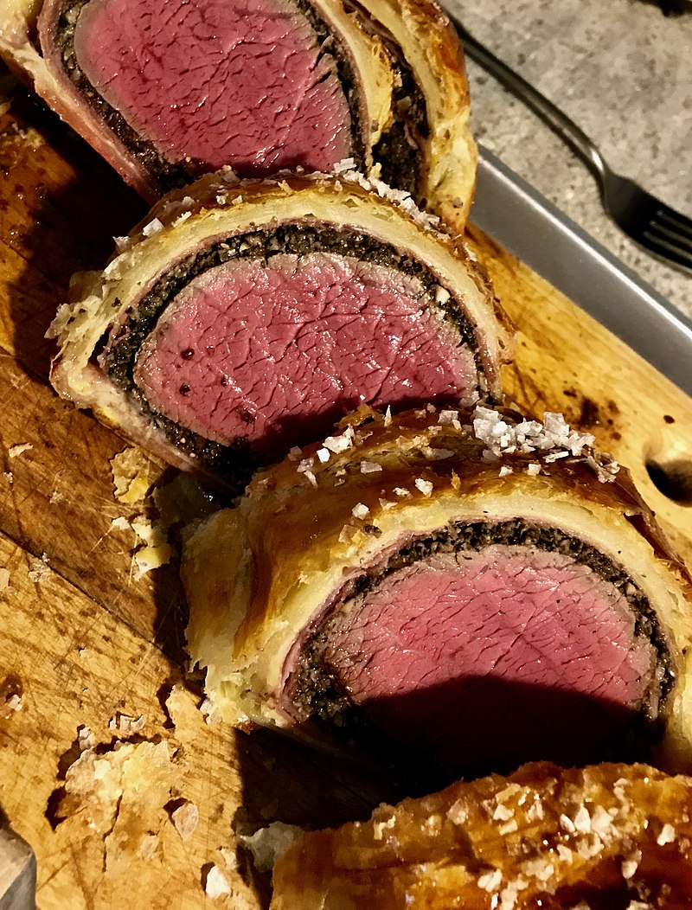

Beef Wellington

Description
Named after the Duke of Wellington, the Englishman who defeated Napolean, Beef Wellington is a famous English dish.
Similar dishes most likely predate Beef Wellington by centuries.
Ingredients
- 1 pound beef tenderloin filet
- Kosher salt and freshly ground black pepper
- 2 tablespoons eltra virgin olive oil
- 1 pound mushrooms (cremini & shiitake mix)
- 4 thin slices ham (Parma ham if you can get it) or prosciutto
- 2 tablespoons yellow mustard (we used Coleman's Original English Mustard)
- 1 (7 to 8 1/2-ounce sheet) puff pastry, thawed (see recipe note)
- 2 large egg yolks, beaten
Steps
- Preheat the oven to 400°F as you assemble the Wellington.
- Season the fillet generously with salt and pepper.
- Heat a tablespoon or two of oil in a large pan on high heat.
- Sear the fillet in the pan on all sides until well browned. (Do not move the fillet until it is browned.)
- Remove the fillet from the pan & let it cool.
- Brush the fillet on all sides with mustard.
- Chop the mushrooms. Purée them in a food processor.
- Heat the saute pan on medium-high heat.
- Add the mushroom purée to the pan and cook, allowing the mushrooms to release their moisture.
- Once the moisture has been boiled away, remove the mushrooms from the pan and set them aside to cool.
- Roll out a large piece of plastic wrap.
- Lay out slices of ham on the plastic wrap so that they overlap.
- Spread the mushroom mixture over the ham.
- Place the beef fillet in the middle of the ham & mushroom base.
- Roll the mushroom and ham base over the fillet, using the plastic wrap to do this tightly.
- Wrap the beef fillet into a tight barrel shape, twisting the ends of the plastic wrap to secure. Refrigerate this for 20 minutes.
- On a lightly-floured surface, roll out the puff pastry to a size that will wrap around the beef fillet.
- Unwrap the fillet from the plastic wrap and place it in the middle of the pastry dough.
- Brush the edges of the pastry with the beaten egg yolks.
- Fold the pastry around the fillet. Cut off any excess pastry. Try not to overlap the pastry much.
- Place the fillet on a small plate, seam-side down, and brush with beaten egg yolks all over the top.
- Chill the fillet for 5-10 minutes.
- Put the fillet on a baking pan. Brush the exposed surface again with beaten eggs.
- Score the top of the pastry with a sharp knife (DO NOT GO ALL THE WAY THROUGH THE PASTRY.)
- Sprinkle the top with coarse salt.
- Bake in the 400 degree oven for 25-35 minutes. The pastry will be golden when finished.
- Test the meat with an instant-read thermometer. Take the Wellington out of the oven at 125-130 degrees for medium-rare.
- Let rest for 10 minutes before slicing.
- Slice in 1-inch thick slices and serve.
Original source: here